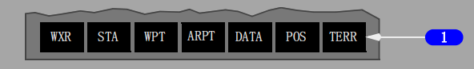
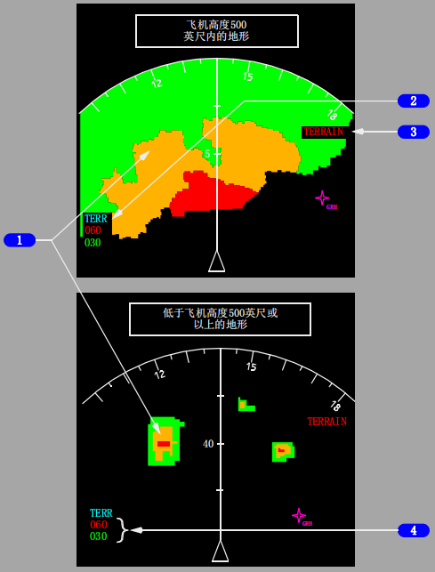
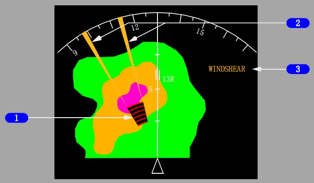
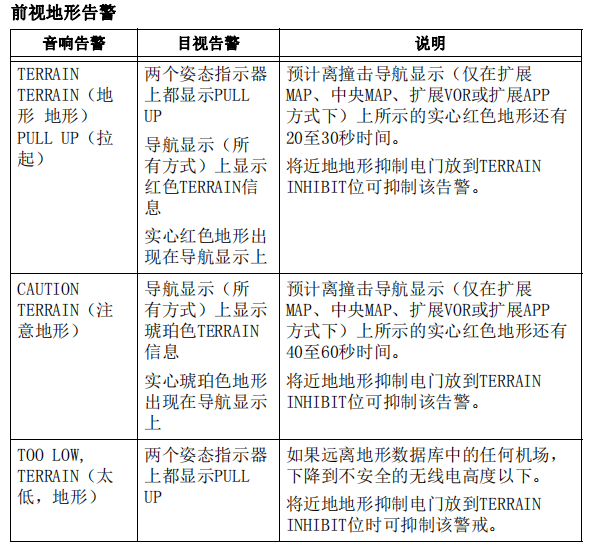
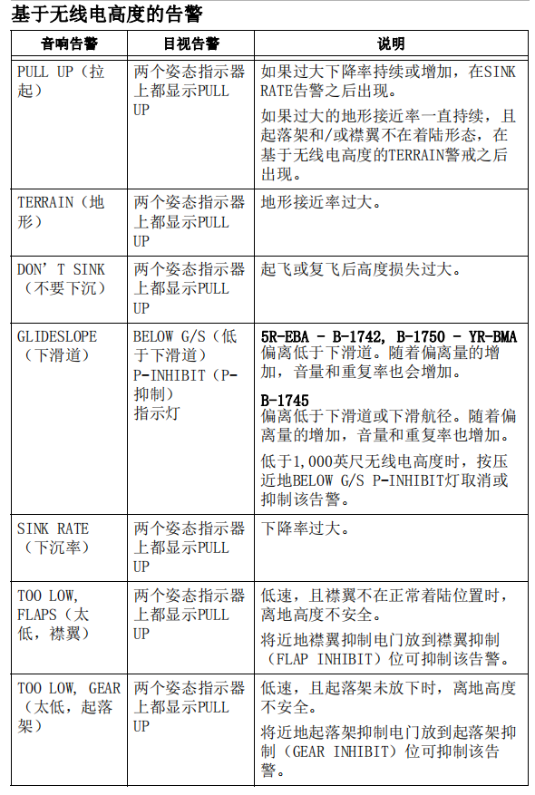
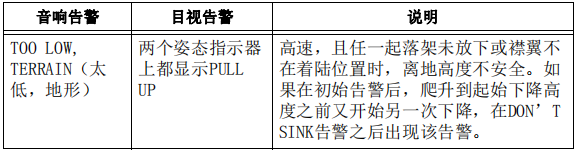
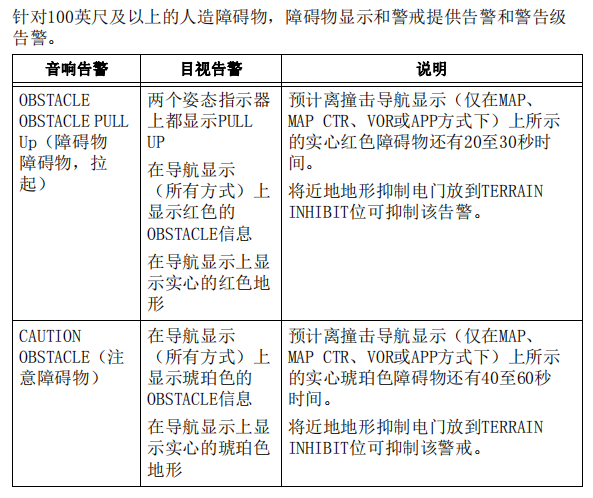
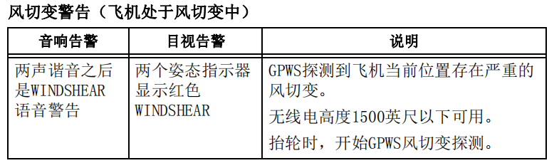
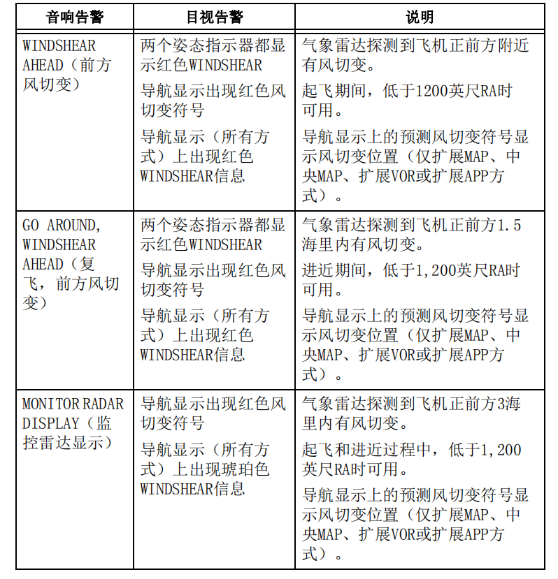
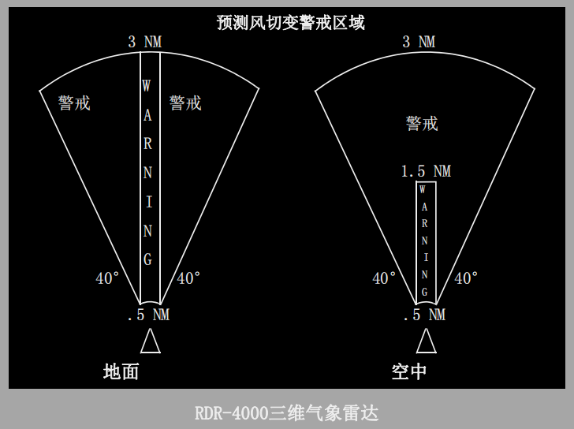

2 不工作(INOP)灯
亮（琥珀色）- GPWS计算机故障或电源失效
• 正在接收来自无线电高度表、ADIRU、ILS接收机、
IRS、FMC、失速管理计算机或EFIS控制面板的无效输入。
3 近地系统测试((SYS TEST)电门
按压 -
• 在地面瞬时：
• 低于下滑道（BELOW G/S）和近地警告系统不工作（GPWS INOP）指示灯亮
• 地形失效（TERR FAIL）和地形测试（TERR TEST）信号出现在导航显示上
• 拉起（PULL UP）和风切变（WINDSHEAR）告警亮
• GLIDE SLOPE（下滑道）、PULL UP（拉起）和WINDSHEAR（风切变）音响警告声响
• TERRAIN TERRAIN PULLUP（地形 地形 拉起）音响警告声响
• 地形显示测试流程图出现在导航显示上
• TERRAIN TERRAIN PULLUP（地形 地形 拉起）音响警告声响
• OBSTACLE OBSTACLE PULLUP（障碍物 障碍物 拉起）音响警告声响。(选型)
• AIRSPEED LOW（空速低）”音响警告声响。
• 在地面，上述指示总是先发生，然后开始自检音响警告，伴有这些附加的音响：
• 基于无线电高度告警
• 坡度角告警
• 进近喊话
• 风切变告警
• 前视地形告警
• 系统测试在空中被抑制。
4 近地襟翼抑制(FLAP INHIBIT)电门
襟翼抑制（FLAP INHIBIT）-
抑制近地太低襟翼（TOO LOW FLAPS）告警。
正常（NORM）（带护盖位）-
正常襟翼太低（ TOO LOW FLAPS）告警有效。
5 近地起落架抑制(GEAR INHIBIT)电门
起落架抑制（GEAR INHIBIT）-
抑制近地起落架太低（TOO LOW GEAR）告警。
正常（NORM）（带护盖位）-
正常起落架太低（TOO LOW GEAR）告警有效。
6 近地地形抑制(TERR INHIBIT)电门
地形抑制（TERR INHIBIT）-
抑制前视地形告警和地形显示。
正常（NORM）（带护盖位）-
正常地形警戒和地形显示有效。
7 近地跑道抑制(RUNWAY INHIBIT)电门
抑制：空中冲出跑道警告、地面冲出跑道警告和减速板告警。
8 跑道不工作 (INOP) 指示灯
亮（琥珀色）- 发生以下任一情况：
• GPS位置不够准确
• 机场不在GPWS数据库中
• 近地跑道抑制电门不合理：
空速等于或大于250节超过60秒钟，且近地跑道抑制电门位于抑制（INHIBIT)位。

1 地形(TERR)显示选择电门
按压 -
• 在扩展MAP、中央MAP、扩展VOR和扩展APP方式下显示地形数据
• 在PLN、中央VOR和中央APP方式下预位地形数据
• 无论方式选择器在何位置，都会取消气象雷达显示
• 再次按压取消地形显示。

1 地形显示
图形显示周围的地形和障碍物。
当飞机高于所选显示范围内的最高地形 500英尺或更多时，地形显示为绿色，颜色密度根据地形标高的不同而产生变化：
• 实心绿色： 最高标高地形
• 高密度点状绿色： 中等标高地形
• 低密度点状绿色： 最低标高地形
• 黑色： 无明显的地形
当飞机高于所选显示范围内的最高地形 不到500英尺时，颜色和密度根据地形与飞机的相对高度而产生变化:
• 实心红色： 前视地形警告生效
• 实心琥珀色： 前视地形警戒生效
• 点状红色： 高于飞机当前高度2000英尺以上的地形
• 点状琥珀色： 低于飞机当前高度500英尺(起落架放下时为250英尺)至高于飞机当前高度2000英尺的地形
• 点状绿色： 低于飞机当前高度2000英尺至500英尺(起落架放下时为250英尺)的地形
• 黑色： 无明显的地形
• 点状洋红色： 无可用地形数据
Note: 在没有地形数据的区域，前视地形告警和显示功能不可用。
基于无线电高度的地形告警功能正常。
Note: 不显示低于飞机高度2000英尺以上的地形或在最近机场跑道标高400英尺/200英尺(选型)以内的地形。
Note: 不显示在最近机场跑道标高400英尺/200英尺(选型)以内的地形。(选型)
在下列情况下自动显示：
• 出现前视地形告警；且
• 无一飞行员选择地形显示，且
• 在扩展MAP、中央MAP、扩展VOR或扩展APP方式下。
通过刷屏进行更新，与气象雷达显示相似。
2 地形方式信号牌
地形（青蓝色）-
可以显示地形（人工或自动显示）
3 前视地形告警
在所有导航显示方式下显示。
TERRAIN（地形）
• 红色 - 前视地形警告告警激活。
• 琥珀色 - 前视地形警戒告警激活。
OBSTACLE（障碍物）
• 红色 - 障碍物警告告警激活。
• 琥珀色 - 障碍物警戒告警激活。
4 TERR(地形)标高数
显示最高和最低地形的标高。标高显示的颜色与地形显示的颜色相对应。
• 绿色 - 地形标高低于飞机高度500英尺以上。
• 琥珀色 - 地形标高在飞机高度500英尺以下至2000英尺以上之间
• 红色 - 地形标高高于飞机高度2000英尺以上
Note: 显示的数值适用于一般为飞机飞行航径前方的地形。接近显示裕度左右的地形可能不在计算范围内。

1 预测风切变符号
显示（红色和黑色）- 预测风切变告警激活。
显示风切变位置和大概的几何尺寸(宽度和厚度)。
在下列情况下，符号、径向线和气象雷达回波自动显示：
• 出现预测风切变告警，且
• 无一飞行员选择WXR显示，且
• 在扩展MAP、中央MAP、VOR或APP方式下。
地形显示生效时，气象雷达显示取代地形显示。
2 预测风切变符号径向线
显示（琥珀色）- 预测风切变告警激活。
从预测风切变符号开始延伸，帮助识别风切变的位置
3 风切变(WINDSHEAR)信号
风切变（琥珀色）- 预测风切变警戒激活。
风切变（红色）- 预测风切变警告激活。
在所有导航显示方式下显示。
近地告警
当存在潜在的威胁飞行安全的情况(包括即将触地)时，GPWS会提供告警。
GPWS根据无线电高度和气压高度、空速、下滑道偏离和飞机形态提供告警。
警戒针对：
• 下降率过大
• 地形接近率过大
• 起飞或复飞后高度损失
• 不在着陆形态时不安全的离地间距
• 低于ILS下滑道偏离过度
• 低于下滑道偏离过度(选型)
这些告警是“基于无线电高度的告警”。
除了提供基本的GPWS功能外，EGPWS还使用内部的全球地形数据库监控近地状况。
近地地形数据显示在导航显示上。
如果有潜在的触地危险，根据预计的触地时间提供告警。这就是“前方地形告警”。
近地告警伴有语音告警且姿态指示器上显示拉起（PULL UP）信号。
对于低于下滑道偏离告警，低于下滑道（BELOW G/S）指示灯亮。
Note: 飞机前方的地形可能超过可用的爬升性能。近地告警无法保证安全的离地间距。
Note: 如果遇到垂直陡峭的地形或飞机在着陆形态时以小角度下降，GPWS无法提供告警。(选型)
前视地形告警和基于无线电高度告警根据危险程度和机组所需反应时间排列先后顺序。
前视地形告警和基于无线电高度的告警受实际风切变警告的抑制（飞机处于风切变中）。
告警受实际风切变警告的抑制（飞机处于风切变中）。(选型)
前视地形警戒
EGPWS地形数据库包括主要机场附近的详细地形数据和机场间区域的一般数据。
飞机气压高度2000英尺以内的地形显示在导航显示上。
地形数据并未设计成独立的助航设施。
Note: EGPWS地形数据库、前视地形警戒和地形显示不包含人造的障碍物。
地形显示来自于EGPWS计算机中的数据库并与GPS位置相关。
地形与气象雷达无法在一个显示屏上同时显示。
如果一名飞行员选择地形，另一名飞行员选择气象雷达，每个显示都将在交替扫描时更新。
所有其它显示（TCAS、LNAV航路等）可与地形数据一同显示。
前视地形告警基于飞机位置、气压高度、垂直飞行航径和地速。




空中冲出跑道警告
空中冲出跑道警告系统根据飞机的动力状态、飞行员输入的跑道条件和剩余可用的着陆距离向机组发出告警，如果继续进近和着陆，很可能出现冲
出跑道。
告警从500英尺高于跑道接地区标高 (TDZE)开始预位，直至飞机接地。
告警包括主飞行显示器（PFD）上的目视警戒复飞（GO AROUND）和音响告警“OVERRUN，GO AROUND（冲出跑道、复飞）”
以下情况，音响告警将重复一次：
• 高于接地区标高（TDZE）150英尺或更小,及
• 警戒情况真实存在至少7秒钟。
增强型近地警告系统(EGPWS)连续计算出一个预计的着陆距离。
当预测的着陆距离超出了至跑道头的距离，触发空中冲出跑道告警。
至跑道头的距离以增强型近地警告系统(EGPWS)的跑道数据库和飞机位置为基础。
以下任一情况发生时，空中冲出跑道告警被抑制。
• 高于接地区标高（TDZE）500英尺以上；
• 空中/地面信号指示飞机在地面上；
• 高度高于接地区标高（TDZE）50英尺以上，下降率降低至300英尺/分以下至少持续两秒（飞机进近时不再下降）；
• 增强型近地警告系统(EGPWS)未识别着陆跑道；
• 飞机位置不够精确；
• 近地警告系统(GPWS)的操纵面板上的跑道抑制电门处于抑制（INHIBIT）位。
• 设置左或右推力手柄至少至最大爬升推力（已开始复飞）；
• 设置左或右推力手柄至慢车位，并且左或右反推手柄正在接近反推慢车卡位（反推即将展开）；
• 未设置襟翼至15、30或40度（未设置着陆襟翼）
• 无线电高度少于0英尺。
地面冲出跑道警告
地面冲出跑道警告向机组发出告警，必须立即使用与当时的情境一致的最大人工刹车和最大反推，从而能在跑道末端停住飞机。
接地3秒后告警预位，直至飞机减速至低于20节地面速度，或行至距跑道头1000英尺以内。
告警包括主飞行显示器（PFD)上的最大反推（MAX REVERSE）目视告警，和“MAX BRAKES，MAX REVERSE（最大刹车、最大反推）”音响告警。
飞机减速至低于20节地面速度时，目视告警最大反推（MAX REVERSE）被移除。
音响告警将只响一次。
增强型近地警告系统 (EGPWS) 继续计算出一个最大力争停止距离。
最大力争停止距离超出至跑道头的距离时，触发地面冲出跑道告警。
离跑道头的距离基于EGPWS的跑道数据库和飞机位置。
以下任一情况发生时，地面冲出跑道告警被抑制：
• 飞机航向偏离跑道航向大于20度，并持续一秒以上；
• 空中/地面信号指示飞机在空中；
• 地面速度小于45节；
• 离跑道头的距离小于1000英尺；
• 飞机位置不够精确；
• EGPWS操纵面板上的跑道抑制电门位于抑制（INHIBIT）位。
• 左或右推力手柄高于慢车位（飞机正在执行初始起飞，或将起动复飞）；
• 襟翼设置不是15、30或40度（襟翼未被设置为着陆形态）；
• 无线电高度为10英尺或更大。
减速板警告
在着陆期间或速度大于80节时实施中断起飞，如果减速板未伸出，减速板告警会发出一个及时的警告。
告警包括主飞行显示器（PFD）上的减速板（SPEEDBRAKE)目视告警和个SPEEDBRAKE, SPEEDBRAKE（减速板，减速板）音响告警。
音响告警不重复。
EGPWS监控扰流面板4和9的位置。
在接地3秒后或速度大于80节时实施中断起飞，如果这些扰流板伸出不到一半，会触发减速板告警。
如果A液压系统出现低压（扰流板面板4和9由A液压系统供压），减速板告警被抑制。
风切变告警
在起飞、进近和着陆时风切变告警可用：
• 飞机处于风切变时，GPWS提供警告。
• 气象雷达为飞机前方的严重风切变提供告警。
这些称为“预测风切变告警”。
风切变警告伴有语音音响警戒且姿态指示器上出现红色WINDSHEAR信息。 (选型)
风切变警戒伴有语音音响告警。 (选型)
风切变告警根据风切变的危害程度和机组所需反应时间排列先后顺序。(选型)
预测风切变告警被实际的风切变警告(飞机处于风切变中)、前视地形告警或基于无线电高度的告警抑制。(选型)

预测风切变告警
进入风切变前，气象雷达用雷达成像探测扰动气流。
Note: 气象雷达对含有一定水气和特殊物质的风切变情况提供风切变告警。
Note: 气象雷达探测微下击暴流和其它具有类似特性的风切变。
气象雷达并不为所有类型的风切变提供告警。
飞行机组仍必须依靠传统风切变的避让方法。

在下列情况下，气象雷达自动开始扫描风切变:
• 推力手柄置于起飞位，即使发动机关断或IRS未校准，或
• 空中低于2,300英尺RA/1,800英尺RA(选型)（低于1,200英尺RA时发出预测风切变告警）。
气象雷达开始扫描风切变，大约12秒后可提供告警。
起飞前按压电子飞行仪表系统(EFIS)控制面板上的气象雷达(WXR)电门可提供预测风切变告警。
在遭遇风切变前10-60秒发出警告。(选型)
当PWS可用时，雷达天线扫描开始减弱。(选型)

预测风切变的抑制
起飞和着陆期间，新的预测风切变警戒在速度80节和400英尺RA间受抑制，新的警告在速度100节和50英尺RA间受抑制。
这些抑制不会消除现有的预测风切变告警。
如果一个警告/警戒事件发生在那些边界之前，它将保持显示并发出完整的语音喊话。